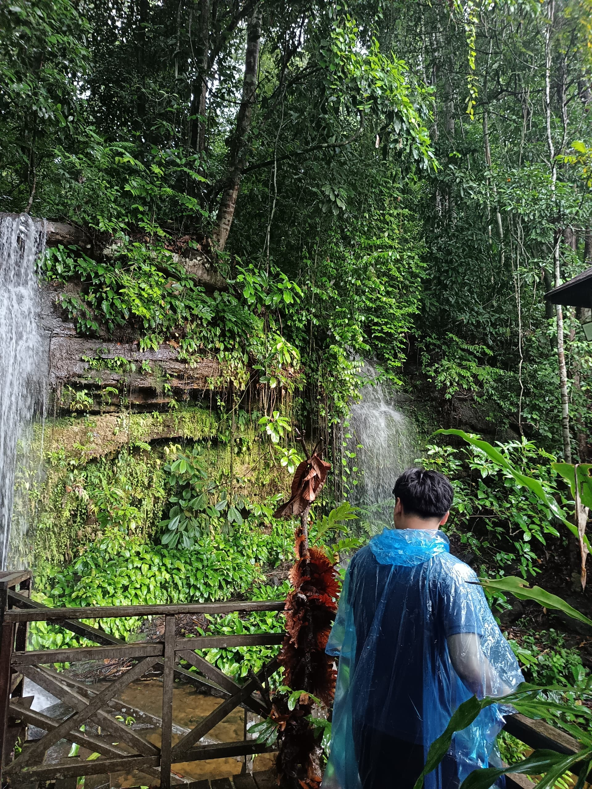

GET TO KNOW MORE ABOUT ME
Full Name: Norton Nickos Nereus
Date of Birth: 23 February 2006
Age: 20 years old
Place of Birth: Hospital Likas, Sabah
Gender: Male
Nationality: Malaysian
State: Sabah
Hobbies: Playing badminton and gaming
Favourite Food: Chicken rice
Favourite Drink: Coconut water
Favourite Colour: Red and blue
Favourite Music: Green Day - Boulevard of Broken Dreams
Listen to My Favourite Song:
Favourite Sport: Badminton
Favourite Quote: "Maybe I'm not stuck in the past. Maybe I just loved those days too much."
Life Quote: "Just be yourself."
Personal Goals: To become a better person in life.
Things I Enjoy: Walking alone in nature or at night because it gives me peace. I also prefer quiet places over crowded areas.
